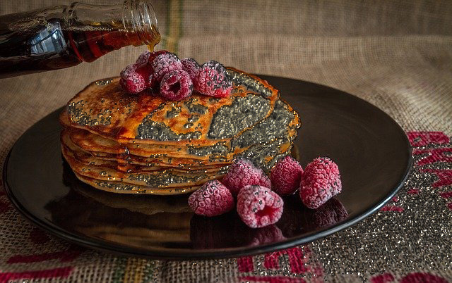

Homepage
Homepage
🤖🥞 Metallic Phallic Pancakes 🥞🤖

Hard, large, and in charge.
Prep Time: 10 minutes
Cook Time: 5 minutes
YOU WILL NEED
- 1.5 cups all-purpose flour
- 3.5 teaspoons baking powder
- 1/4 teaspoon salt, or more to taste
- 1 tablespoon white sugar
- 1.25 cups milk
- 1 egg
- 3 tablespoons butter, melted
DIRECTIONS
- In a large bowl, sift together the flour, baking powder, salt and sugar. Make a well
in the center and pour in the milk, egg and melted butter; mix until smooth.
- Heat a lightly oiled griddle or frying pan over medium-high heat. Pour or scoop
the batter onto the griddle, using approximately 1/4 cup for each pancake. Brown
on both sides and serve hot.